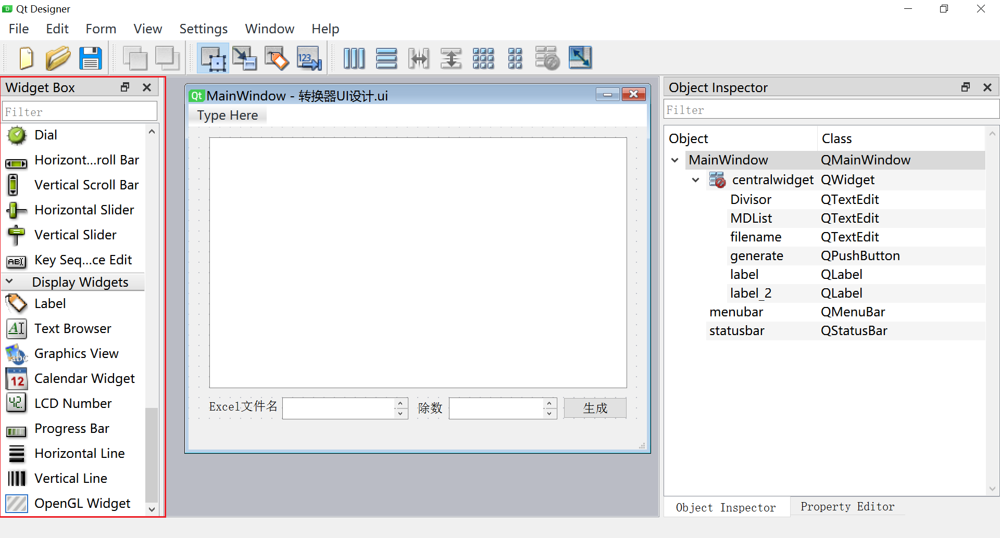
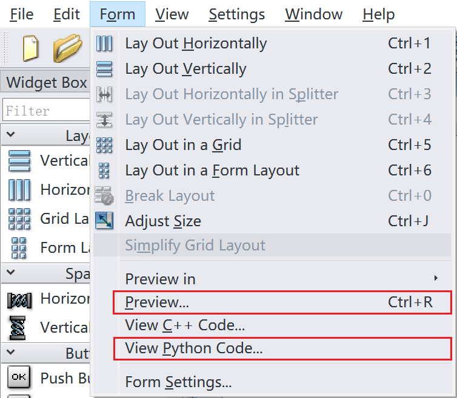

PYQT5的安装与使用
简介
PyQt5是一套来自Digia的Qt5应用框架和Python的粘合剂。支持Python2.x和Python3.x版本。
PyQt5以一套Python模块的形式来实现功能。它包含了超过620个类，600个方法和函数。它是一个多平台的工具套件，它可以运行在所有的主流操作系统中，包含Unix，Windows和Mac OS。PyQt5采用双重许可模式。开发者可以在GPL和社区授权之间选择。
PyQt5的类被划分在几个模块中，下面列出了这些模块：
- QtCore ：模块包含了非GUI的功能设计。这个模块被用来实现时间，文件和目录，不同数据类型，流，URL，mime类型，线程和进程。
- QtGui：模块包含的类用于窗口化的系统结构，事件处理，2D绘图，基本图形，字体和文本。
- QtWidgets：模块包含的类提供了一套UI元素来创建经典桌面风格用户界面。
- QtMultimedia：模块包含的类用于处理多媒体内容和链接摄像头和无线电功能的API。
- QtBluetooth：模块包含的类用于扫描蓝牙设备，并且和他们建立连接互动。
- QtNetwork：模块包含的类用于网络编程，这些类使TCP/IP和UDP客户端/服务端编程更加容易和轻便。
- QtPositioning：模块包含的类用于多种可获得资源的位置限定，包含卫星定位，Wi-Fi，或一个文本文件。
- Enginio：模块用于解决客户端访问Qt云服务托管。
- QtWebSockets：模块用于解决客户端访问Qt云服务托管。
- QtWebKit：包含的关于浏览器的类用于解决基于WebKit2的支持库。
- QtWebKitWidgets：模块包含的关于WebKit1的类基本解决浏览器使用基于QtWidgets应用问题。
- QtXml：QtXml 模块包含的类用于解析XML文件。这个模块提供SAX和DOM API解决方法。
- QtSvg：模块提供类用于显示SVG文件内容。Scalable Vector Graphics (SVG) 是一种语言，用XML来描述二维图形和图形应用程序。
- QtSql：模块提供类驱动数据库工作。
- QtTest：模块包含了方法提供PyQt5应用的单元测试。
PyQt5不向后兼容PyQt4；这是一些在PyQt5中的重要改变。然而，将旧代码迁移到新的版本中并不是非常困难。不同点如下：
Python 模块已经被改写. 一些模块被舍弃 (QtScript), 部分的模块被分割成子模块 (QtGui, QtWebKit).
新的模块被引进, 包含 QtBluetooth, QtPositioning, 和 Enginio.
PyQt5 只支持最新风格的信号和槽的写法. SIGNAL()和SLOT()的调用将不会被长时间支持.
PyQt5 不支持任何在Qt 5.0版本中弃用或取消的API.
安装
首先安装pyqt5
pip install PyQt5其次安装qtdesiner，在安装的时候需要耗费长一点的时间
pip install PyQt5-tools -i https://pypi.douban.com/simple可以在%python路径%\Lib\site-packages\qt5_applications\Qt\bin中找到designer.exe，双击打开qtdesiner
qtdesiner基本的使用
一下简略介绍qtdesiner基础使用
大概流程为File -> New -> Main Window -> Create -> 在组件框中拖选组件进入主窗口 -> 修改组件名字 -> 保存为.ui文件
更详细的操作可查看该网址：Qt Designer的简单使用 (biancheng.net)
主要功能
功能框内可以拖选文本框，标签等等放入到主窗口中，并且可以随意调节大小。

注意右边，该页面是作者调节过的，在Object Inspector页面中可以修改主界面中各组件的名字，选择某组件会在主界面中高亮
Property Editor可以调节该组件的参数
阅读代码/预览效果
可在以下操作中预览和浏览代码

.ui转换为.py
保存为.ui文件后，需要转换为.py文件
在cmd中将当前路径设置为ui文件所在的位置，使用pyui5
pyuic5 -o <name>.py <name>.ui\
enter后会生成一个py文件，该py文件即是该ui的python文件
这是小例子
pyuic5 -o mainFrame.py mainFrame.ui初始化页面
生成.py文件后，我们需要打开页面，在生成的类中继承QMainWindow，然后输入代码：
from PyQt5.QtWidgets import QMainWindow
class MainWindow(QMainWindow):
def __init__(self, parent=None):
super(MainWindow, self).__init__(parent)
self.setupUi(self)在运行的类中，输入如下代码
# 固定的，PyQt5程序都需要QApplication对象。sys.argv是命令行参数列表，确保程序可以双击运行
app = QApplication(sys.argv)
# 初始化
mw = MainWindow()
# 将窗口控件显示在屏幕上
mw.show()
# 事件窗口绑定
self.__ButtonEvent(mw)
# 程序运行，sys.exit方法确保程序完整退出。
sys.exit(app.exec_())运行该类即可打开窗口
事件
点击
通过主要窗口获取组件名称，点击后调用方法
def __ButtonEvent(MainWindow):
MainWindow.组件名称.clicked.connect(lambda: self.事件方法(MainWindow))文本框
获取文本框中的内容
mainFrame.文本框组件名称.toPlainText()文本框设置内容
mainFrame.文本框组件名称.setText()本博客所有文章除特别声明外，均采用 CC BY-SA 4.0 协议 ，转载请注明出处！